Mewujudkan desa yang mandiri,
sejahtera, dan berdaya saing melalui
pembangunan yang berkelanjutan.
Scroll ke bawah
Tentang Desa Pattallassang
Desa Pattallassang merupakan salah satu desa di Kecamatan
Labakkang, Kabupaten Pangkajene dan Kepulauan yang memiliki
potensi di bidang pertanian, peternakan, serta kehidupan
masyarakat yang harmonis.
Statistik Desa
👥
3.904
Penduduk
🏠
1.024
Kepala Keluarga
🌾
9.846 Ha
Luas Wilayah
🎓
2
Fasilitas Pendidikan
Pemerintahan Desa
Struktur pemerintahan Desa Pattallassang
dalam menjalankan pelayanan dan pembangunan desa.
Nama Kepala Desa
Kepala Desa
Nama Ketua PKK
Ketua PKK / Ibu Desa
Nama Sekretaris Desa
Sekretaris Desa
Nama Bendahara Desa
Bendahara Desa
Potensi Desa
Potensi unggulan Desa Pattallassang yang menjadi kekuatan dalam pembangunan dan perekonomian masyarakat.
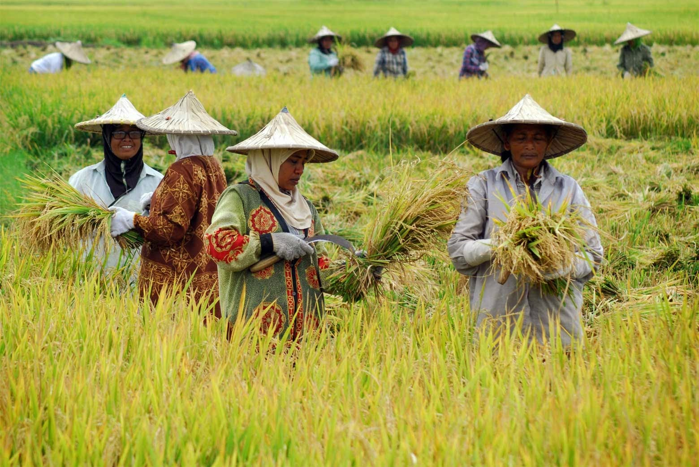
🌾 Pertanian
Komoditas pertanian menjadi salah satu sumber penghasilan utama masyarakat Desa Pattallassang.
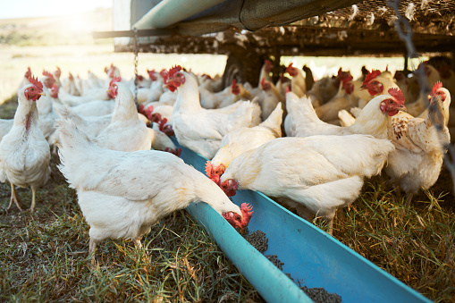
🐓 Peternakan
Peternakan sapi dan unggas berkembang sebagai penunjang ekonomi masyarakat desa.
Galeri Desa
Dokumentasi kegiatan Desa Pattallassang.
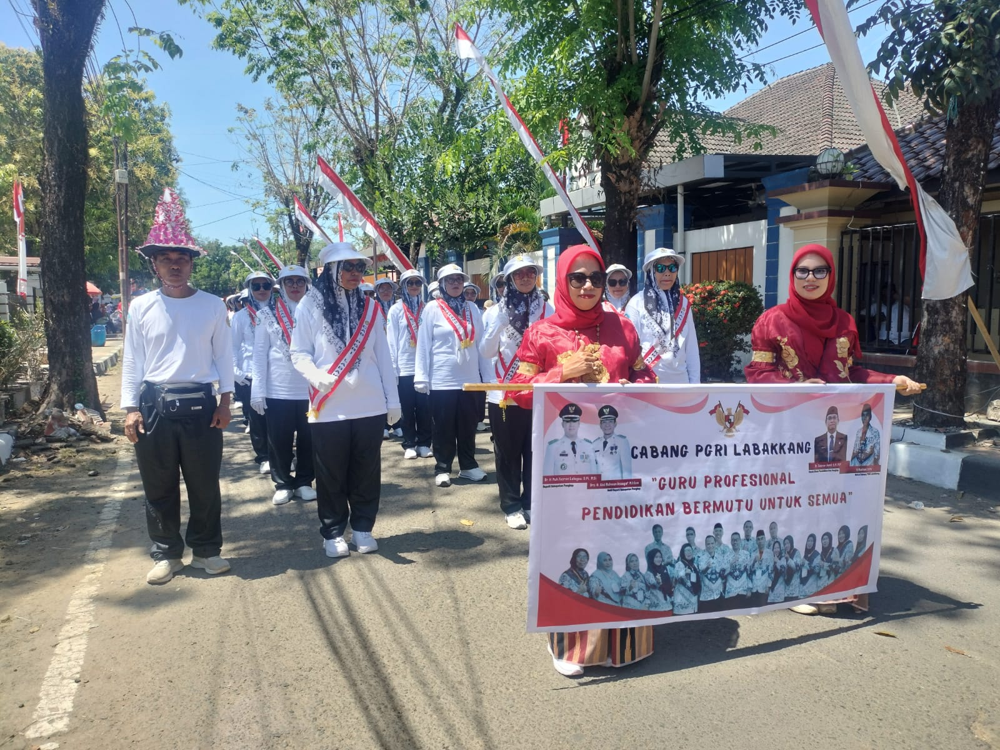
Lihat Foto
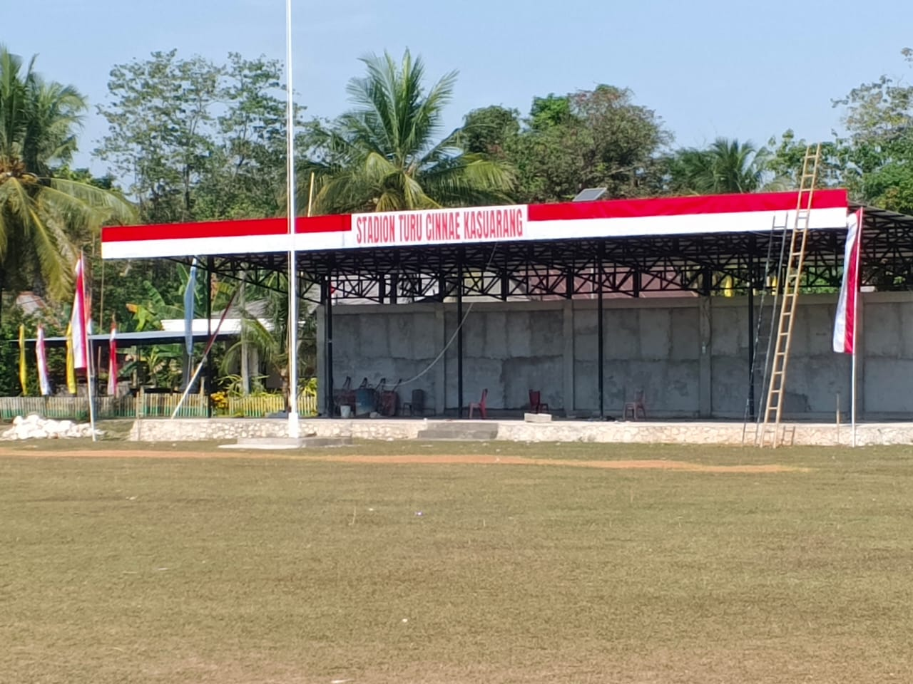
Lihat Foto
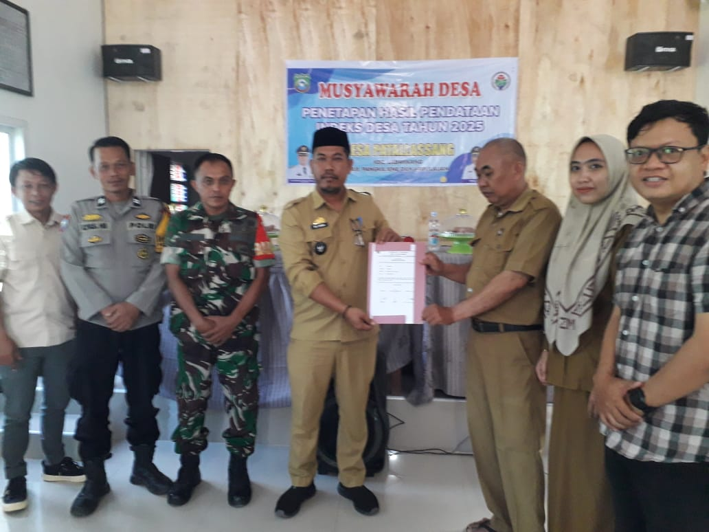
Lihat Foto
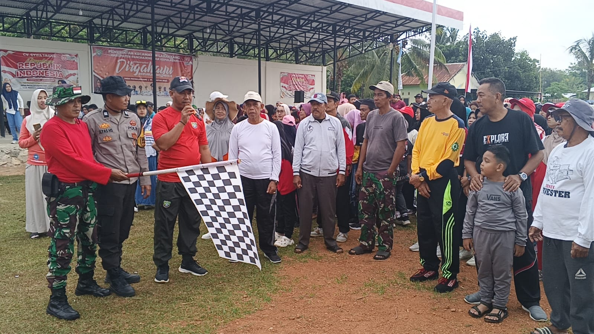
Lihat Foto
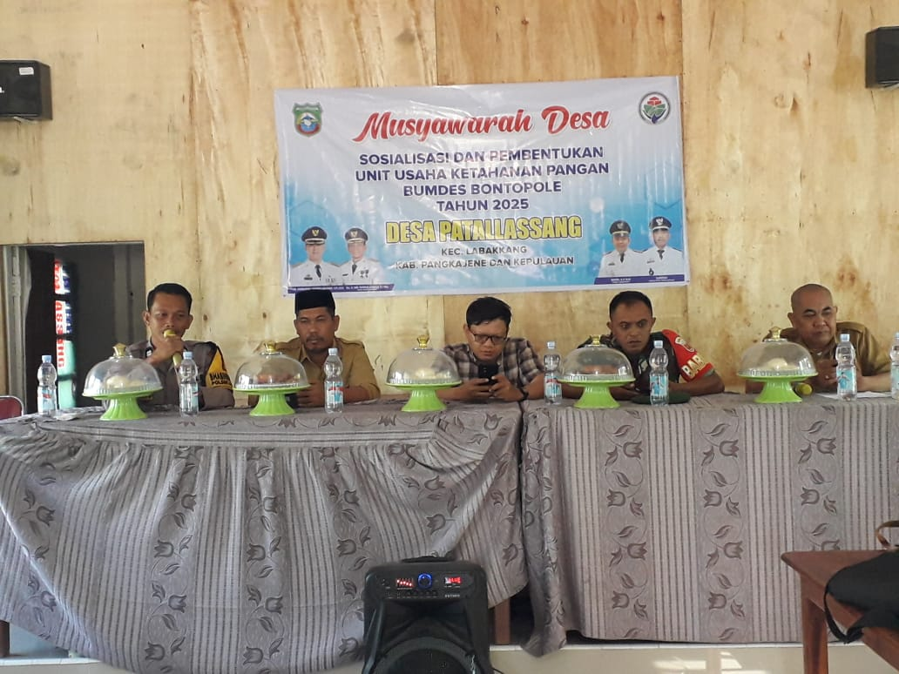
Lihat Foto
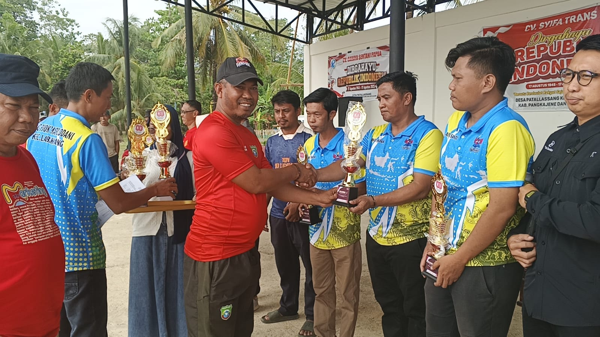
Lihat Foto
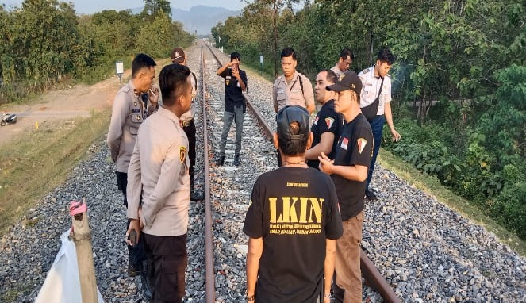
Lihat Foto
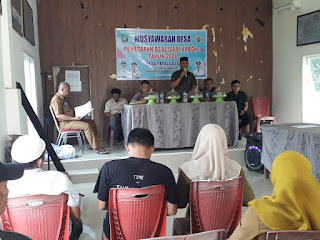
Lihat Foto
1 / 8
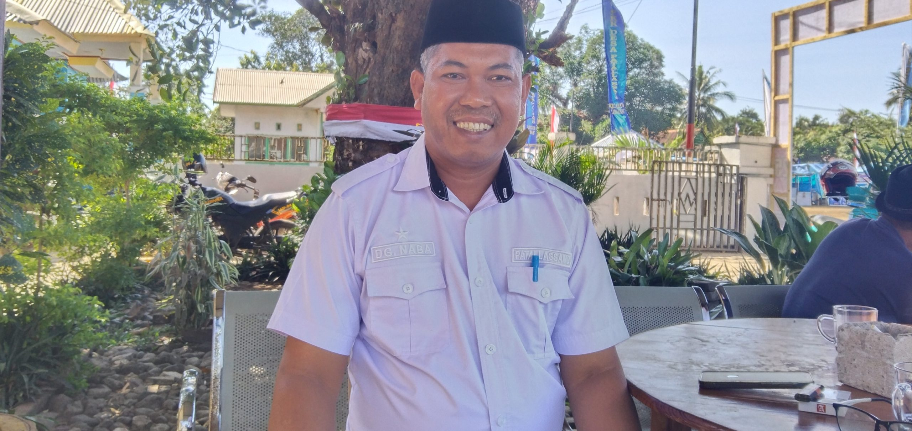
Suryadi Dg Naba
Kepala Desa Pattallassang
×
Tentang Desa Pattallassang
Desa Pattallassang merupakan salah satu desa yang berada di Kecamatan Labakkang, Kabupaten Pangkajene dan Kepulauan, Sulawesi Selatan. Dengan karakter masyarakat yang aktif dalam kehidupan sosial dan ekonomi, Desa Pattallassang memiliki berbagai potensi yang dapat dikembangkan, khususnya pada sektor pertanian, peternakan, sumber daya manusia, serta kegiatan sosial kemasyarakatan. Melalui kolaborasi antara pemerintah desa dan masyarakat, berbagai potensi tersebut diharapkan dapat terus dikembangkan untuk mendukung peningkatan kesejahteraan dan kemajuan desa. Pemanfaatan teknologi dan informasi juga menjadi bagian penting dalam memperkenalkan potensi serta memberikan informasi mengenai Desa Pattallassang secara lebih luas.